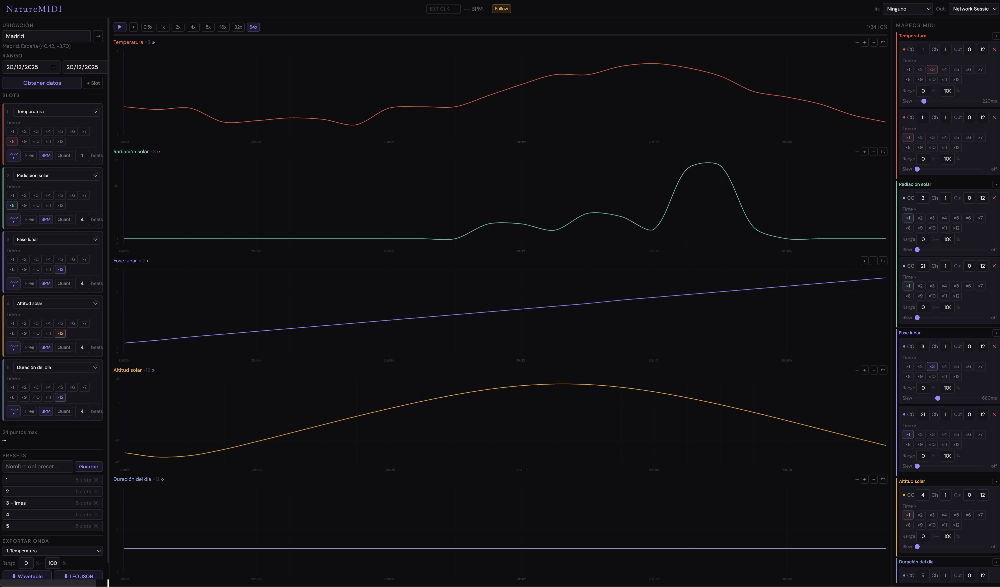
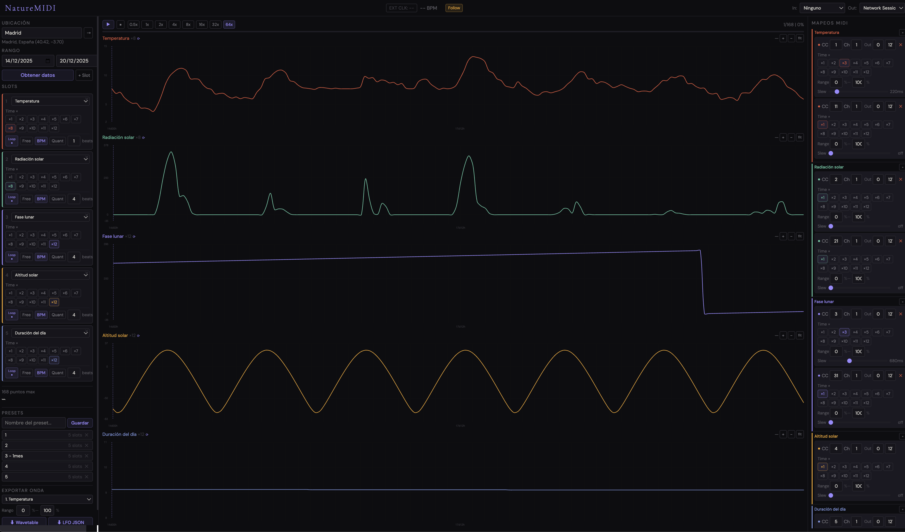
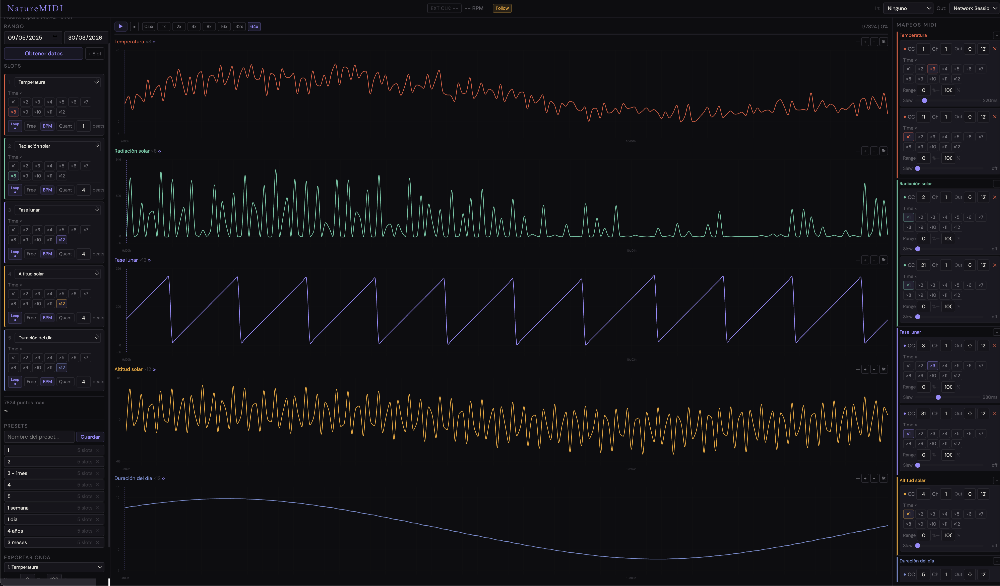
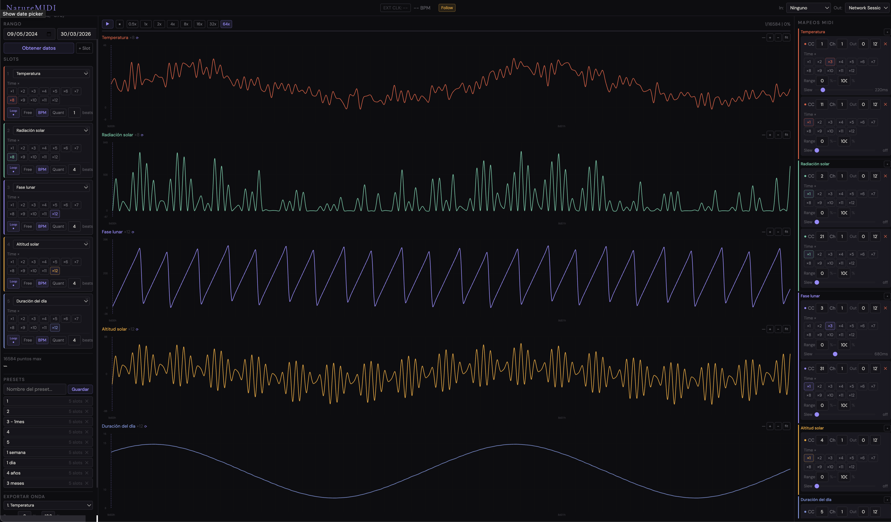
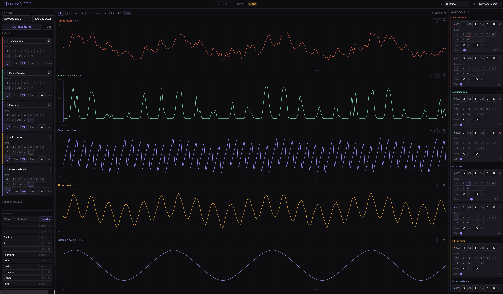

Casi dos décadas de experiencia como técnico de sonido en directo y diseñador de playback para producciones de gran formato.
Miel · Machaka · Papaya Dada · Guardarraya · Verde 70 · La Máquina Camaleón · Jombriel · Swing Original Monks · Biorn Borg · Paola Navarrete · Fausto Miño · Pancho Terán · Mateo Kingman · Héctor Napolitano · Mirella Cesa · Daniel Betancourt · Carlos Vives · Orquesta Sinfónica Nacional del Ecuador & more.